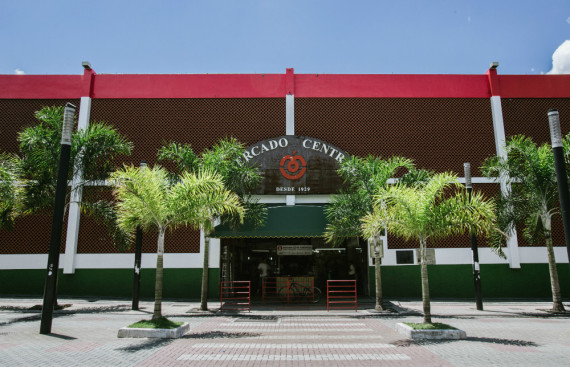
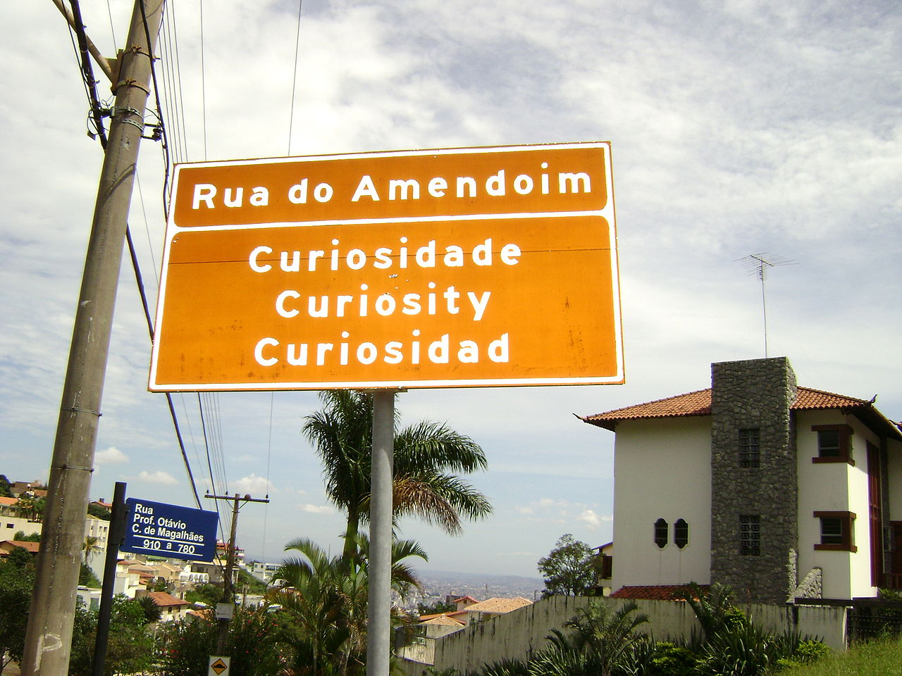

Pontos Turísticos em Belo Horizonte

Mercado Central
O Mercado Central é um mercado localizado no Centro de Belo Horizonte.
Foi criado em 7 de setembro de 1929 e seu galpão ocupa um quarteirão inteiro do Centro da cidade.
É um lugar tanto para turistas quanto para moradores comprarem alimentos frescos, tomarem cerveja gelada e comerem pão de queijo recheado com pernil.
Lagoa da Pampulha
Em 1936, o prefeito de Belo Horizonte, Otacílio Negrão de Lima, iniciou o represamento do ribeirão Pampulha, objetivando a construção de uma lagoapara amortecer enchentes abastecer a capital.
Hoje a avanida em volta da lagoa leva o nome do prefeito.
Nessa avenida encontram-se outras atrações também que fazem parte do complexo da Pampulha, como museus, zoológico, jardim botânico, monumentos arquitetônicos e os estádios Mineirinho e Mineirão.
Rua do Amendoim
Pode parecer bobeira, mas um lugar muito legal de Belo Horizonte é a Rua do Amendoim, que ficou conhecida por uma ilusão de ótica.
Visitando-a de automóvel, ao deixar o motor desligado e desengrenado e soltar os freios, temos a ilusão de que o automóvel sobe a rua, ao invés de descê-la.
É bom ir no final da tarde para depois aproveitar a vista do Mirante do Mangabeiras, que fica ali pertinho.